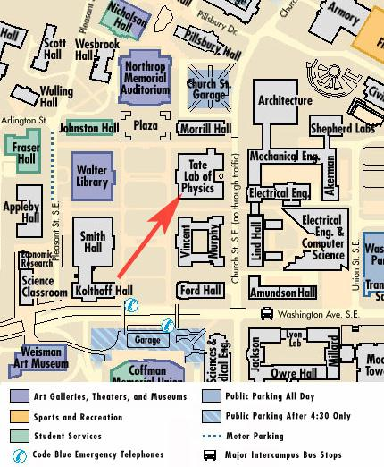

116 Church Street S.E.
University of Minnesota
Minneapolis
Minnesota 55455
U.S.A.
Maps and driving directions for all campus locations can be found at http://onestop.umn.edu/Maps/
This is where we are on the East Bank of the Minneapolis campus:

Interactive map of the twin cities:
<%method meta>
% my $googlekey = "ABQIAAAATuH6R-wtmIVuQwLrBBN3tBQelrnb7beu1AF5qV0I674-3nYAuhR_N2ebZNSm3Gj8ckur0ct7sO2uKw";
<%method body>
onload="load()" onunload="GUnload()"
%# vim: set syntax=mason: